Engineers push to one platform. Portive maintains the other.
iOS ↔ Android continuous sync for native-primary enterprises. Generated, parity-verified, and landed in your repo as a reviewable PR.
Why now
Workflow convergence, not codebase convergence.
Two teams building the same native mobile product was already a problem, but livable at human speed. At agent volume, it isn't. The workflows never caught up. The fix isn't merging two codebases into one; it's converging the work that flows across both. Portive converges the workflow, not the platforms.
Convergence is coming for every native-primary team. As a tax, or as an asset. Portive makes it an asset.
Three shifts in the last twelve months.
The Bet
Enterprise leadership running separate iOS and Android teams decided agents close the mobile engineering gap. They are shopping for those agents this year. Twelve months ago they were dismissing the same pitch as too early.
The Cut
That belief is already inside the budget. Atlassian, JPMorgan, and Goldman are cutting mobile eng headcount on the assumption AI fills the gap. Mobile gets cut. The roadmap doesn't.
The Window
AI-innovation budget lines fund the FDE pilot in weeks, not quarters: no full procurement cycle. The multi-year subscription rolls into normal mobile budget once ROI lands. This window holds through 2027.
Three frontier waves. Same team.
A decade in this arbitrage.
01
Doppl 2016
Google built J2ObjC. We built the open-source SDK enterprises needed to ship it.
02
SKIE 2020
JetBrains built Kotlin Multiplatform. We built the open-source tooling enterprises needed to ship it. In production at 400+ large-scale projects today.
03
Portive 2026, nowNOW
Frontier labs built coding models. We built the trust layer. Memory, verification, and the workflow that keeps humans in the loop. Without those three, no enterprise deploys an agent to their mobile codebase.
Portive's Platform Sync
↻On every push: the graph updates, the other platform re-syncs, parity re-verifies.
Native generated code lands in your repo as a PR; parity is verified at the artifact, not the agent's report.
How Platform Sync works
Push
Engineer ships to Platform A
iOS or Android. Whichever your team owns.
↓
Translation Graph
A persistent, per-enterprise map
How your codebase translates, growing with every deployment.
↓
Sync
Platform B stays current
Generates idiomatic Swift/Kotlin that ships in your repo. No runtime bridge.
↓
Validation
Parity verified at every level, not assumed
Compile and behavior verified at build time. UI verified via screen-level tests.
↓
Auto-PR
Lands in your repo as a reviewable diff
Your team merges. Same workflow they already run.
01Push
↓
02Translation Graph
↓
03Sync
↓
04Validation
↓
05Auto-PR
Push
Engineer ships to Platform A: iOS or Android. Whichever your team owns.
Translation graph
A persistent, per-enterprise map of how your codebase translates, growing with every deployment.
Sync
Platform B stays current. Generates idiomatic Swift/Kotlin that ships in your repo. No runtime bridge between platforms.
Validation
Parity verified at every level, not assumed. Compile and behavior verified at build time. UI verified via screen-level tests.
Auto-PR
Lands in your repo as a reviewable diff. Your team merges. Same workflow they already run.
By design
Audit trail
Agent lines tagged to the agent. Human reviews tagged to the reviewer. Test results pinned to the build that passed them.
Authority
PR lands in the customer’s repo. Their branch-protection and code-review policies hold.
Recovery
If Portive disappears, the customer keeps the working app, the graph, and the test suite.
Compounding Advantage
What gets harder to catch.
Frontier models are fuel, not competition. The labs are standing up deployment companies and wiring models into a hundred workflows. Enterprise mobile is the one they cannot wire. These three are what new entrants can't replicate inside a quarter.
01Workflow design
Fifteen years of workflow scars.
We've lived inside this workflow since 2016: Doppl, then SKIE, now Portive. The edge cases that break a six-month migration: architecture drift, platform-specific UI behavior, resource systems, naming conventions, review expectations. We've shipped through them all. New entrants don't have those scars yet.
Customer ownstheir hardened workflow.
Portive ownsthe install playbook and the multi-org pattern library, fifteen years of production scars compounding.
02Translation graph
Per-enterprise memory. Function mappings, type bridges, UI pairings, all accumulating.
function mappingstype bridgesUI pairings
Denser with every push. A horizontal lab never gets inside.
Customer ownsthe graph, in their repo.
Portive ownsthe sync architecture and the orchestration runtime that makes it denser.
03Artifact-layer evaluation
Parity verified at the compiled artifact. Compile, behavior, UI. Not the model's confidence score.
The parity suite is built from each customer's actual app behavior, captured by Platform Sync as it runs. Deterministic checks where exactness matters, broader review where native platforms should diverge. The longer Portive runs, the harder this suite is to recreate from scratch.
Customer ownstheir parity suite, built from their app's behavior.
Portive ownsthe cross-customer failure-mode library that makes the next suite easier to build.
Patent-pending sync architecture; core processes held as trade secrets.
GTM
Embedded for months. Operational for years.
FDEs embed for 4–6 months. They wire Portive into the team's existing mobile workflow, with the customizations native mobile always needs. They prove ROI. Then the multi-year subscription operationalizes what they installed: deterministic and agentic products that have reshaped the workflow.
Two prices, sequential.
Phase 1
FDE engagement
Prices like a specialist embed.
→
Phase 2
Multi-year subscription
Prices like enterprise infra.
Not bundled. One motion, two instruments.
Roadmap
Surface area, Year 1 to Year 3.
Y12026
Platform Sync in production. iOS ↔ Android continuous sync, deployed across paid design-partner engagements.
Y22027
Translation graph + audit trails, sold as infra. Orchestration, customer-owned memory, validation, and the audit-trail surface, exposed as an enterprise platform.
Y32028
Multi-target implementation layer. Adding tablet and selected cross-platform pairs (KMP, React Native). Same implementation layer, broader surface.
Early Traction
The Atlantic
First FDE Engagement. Design partner validating Portive’s workflow, translation graph, and artifact-level verification against real enterprise mobile constraints.
12-month design partnershipwarrant-backed, not cashfirst paid engagement targeted Q4 2026
Market
The Tax: the annual duplicated feature-engineering spend.
The Tax
$5B+
across the cohort, per year
Every feature is built twice. Half the spend is The Tax.
Cohort
3,400+
enterprises globally
Native mobile is the primary product surface. Parallel iOS and Android teams ship in production. The mobile organization runs 25–45 FTE.
Per-enterprise
$5–7M/yrAnnual spend on the total mobile organization of 25–45 FTE.
$3.5M/yrAnnual spend on the feature-engineering layer: 17 engineers and 3 QA engineers. The unit Portive prices against.
$1.9M/yrHalf the feature-engineering spend. Duplicated, per enterprise.
Team
Three co-founders. Two prior tech-cycle exits.
As Touchlab, 15 years of shipping native mobile to enterprises like:

Jeff Namnum
CEO & Co-founder
Board of Directors, Kotlin Foundation
Kevin Galligan
CTO & Co-founder
Inventor of Doppl
Peter Chislett
COO & Co-founder
Two tech-cycle exits: Monster ('99), Ricoh ('07)
Filip Dolnik
Staff Engineer
Inventor & Lead Maintainer of SKIE
The ask
Raising $2.5M
Funds four new paid FDE-led design-partner engagements after The Atlantic, forward-deployed inside each enterprise's repo. Ships Platform Sync to production.
Y1 → Y2/Y3
Year One: paid sync engagements, FDE-shaped. Forward-deployed engineers build the translation graph and parity verification surface inside each enterprise's repo. In Years Two and Three, those surfaces ship as productized infra, sold per-seat across the cohort.